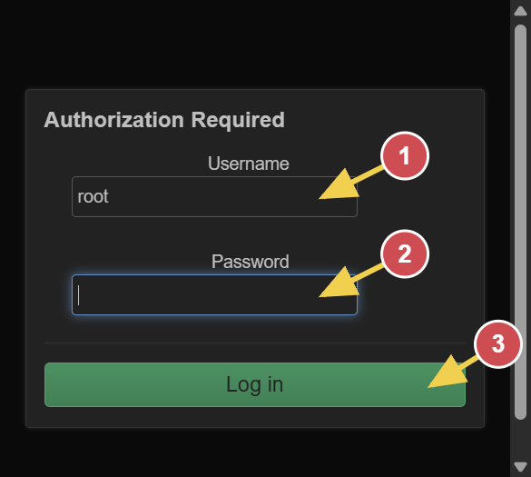
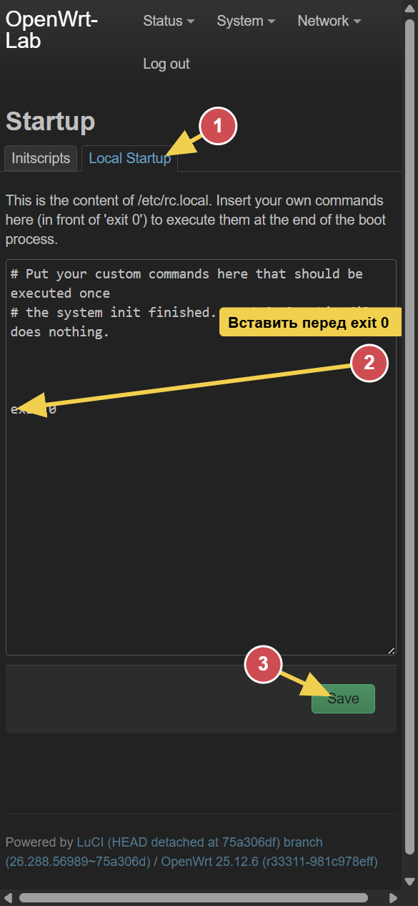
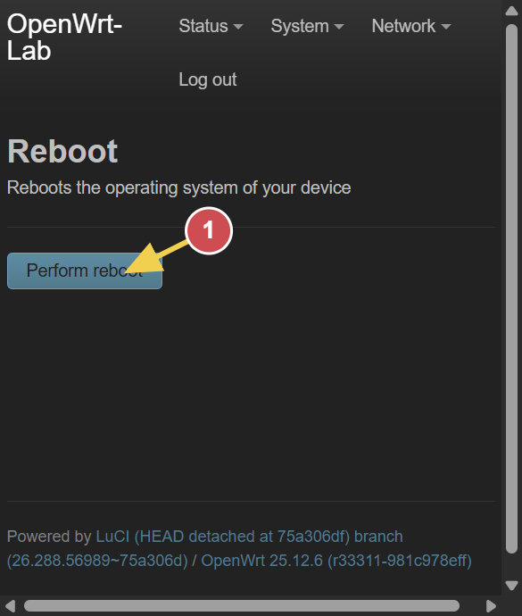

Если адрес другой, откройте его вручную после копирования.
- Войдите в роутер.
Показать пример

- Система → Автозагрузка → Локальный запуск (Local Startup): вставьте код перед последней строкой
exit 0. Старый текст не удаляйте.Показать пример

- Нажмите «Сохранить» / «Сохранить и применить».
- Система → Перезагрузка → Выполнить перезагрузку. Подождите 2 минуты.
Показать пример

Если не получилось
В некоторых версиях пункты называются «Автозапуск» и «Пользовательские скрипты загрузки».
Проверьте Wi-Fi и интернет. Если страница роутера не открывается или выглядит иначе — позвоните Петру. Не сбрасывайте настройки.